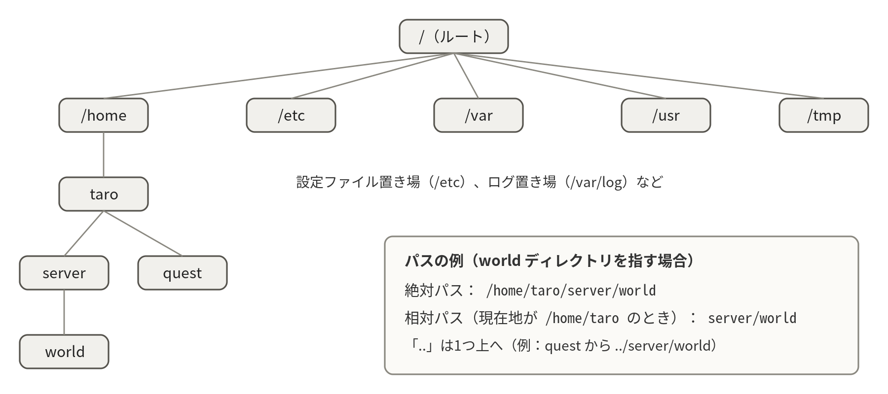

- テキストファイルとバイナリファイルの違いと、Linuxの設定ファイルがテキストである理由
- FHSという標準のおかげで「どこに何があるか」が決まっていること
- 絶対パスと相対パスの使い分け、隠しファイルの意味
- ディスクが足りないときの調べ方（
dfからduへ）
2-1ファイルとは何か
ファイルとは、名前の付いたデータのまとまりである。中身はどんなファイルであれ、突き詰めればバイト列（数値の並び）に過ぎず、それを「どう解釈するか」でテキストファイルとバイナリファイルに分かれる。テキストファイルは、バイト列を文字コードの規則にしたがって文字として解釈できるファイルで、catやviでそのまま読み書きできる。現在の標準的な文字コードはUTF-8で、日本語を含む世界中の文字を扱える。一方バイナリファイルは、プログラム（luantiserver本体など）、画像、圧縮ファイルのように、それぞれ独自の形式でデータを詰め込んだもので、対応するプログラムでないと解釈できない。
- テキストファイルtext file
- バイト列を文字コード（現在はUTF-8が標準）の規則で文字として解釈できるファイル。
catで読め、viで編集でき、grepで検索できる。Linuxの設定ファイルはほぼすべてこれである。
- バイナリファイルbinary file
- 独自の形式でデータを詰め込んだファイル。実行プログラム、画像、圧縮ファイル、Luantiの
map.sqliteなどが該当し、対応するプログラムでないと中身を解釈できない。
Linuxの設定ファイルがほぼすべてテキストファイルなのは偶然ではない。「人間がcatとviさえあれば内容を確認・修正できる」「grepで検索でき、diffで差分が取れる」というテキストの利点を最大限に活かす設計文化だからである。実習でluanti.confやユニットファイルをviで編集できたのも、この文化の恩恵である（第2回 2-4、第2回 2-5）。
2-2「すべてはファイル」という思想
UNIX/Linuxには「すべてはファイルである」という設計思想がある。文書やプログラムはもちろん、ディレクトリも、接続されたキーボードやディスクなどのデバイスも（/dev以下のデバイスファイル）、実行中のプロセスの情報も（/proc以下）、すべてファイルとして表現される。この統一のおかげで、「読む・書く」という同じ操作方法をあらゆる対象に使い回せる。たとえばechoで画面に文字を出すのも、リダイレクトでファイルに書くのも、本質的に同じ操作である。
2-3ファイルの種類
- 通常ファイル：テキストファイルとバイナリファイル。Linuxでは拡張子は単なるファイル名の一部であり、Windowsのようにアプリケーションと結び付いてはいない（人間が分かりやすいように付ける慣習である）。
- ディレクトリ：ファイルを束ねる入れ物。実体は「中にあるファイルの一覧表」を持つ特殊なファイルである。
- シンボリックリンク：別のファイルへの「ショートカット」。
ln -sで作成する。実務ではApache/nginx系の設定有効化などで使われる定番の仕組みである。 - デバイスファイル：ハードウェアをファイルとして見せたもの。
/dev/sda（ディスク）など。
- シンボリックリンクln -s
- 別のファイルやディレクトリを指す「ショートカット」。
ln -s 実体 リンク名で作る。ls -lでリンク名 -> 実体と表示される。
.txt に変えれば、テキストファイルになる
Linuxでは拡張子はただのファイル名の一部であり、中身は変わらない。正体を知りたいときは file ファイル名 で判定する。
ディレクトリも「中にあるファイルの一覧表」を持つ1種類のファイルである。だからディレクトリにもパーミッションがあり、読み書き実行の考え方がそのまま当てはまる（第5章）。
2-4ディレクトリ階層の標準（FHS）
Linuxのディレクトリ構成はFHS（Filesystem Hierarchy Standard）という標準でおおよそ決まっており、どのディストリビューションでも同じ場所に同じ種類のファイルがある。「どこに何があるか」を知っていることは、障害対応のスピードに直結する。
- FHSFilesystem Hierarchy Standard
- Linuxのディレクトリ構成を定めた標準。どのディストリビューションでも、設定は
/etc、ログは/var/logというように置き場所が共通になる。
| ディレクトリ | 役割 |
|---|---|
/bin, /usr/bin | コマンドの実体（ls や cp もここにあるプログラムである） |
/etc | システム・サービスの設定ファイル。実習で編集した luanti.service（/etc/systemd/system/）もここ |
/home | 一般ユーザのホームディレクトリ。/home/taro など |
/root | rootユーザ専用のホームディレクトリ（/home の下ではないことに注意） |
/var | 可変データ。ログ（/var/log）、Webコンテンツ（/var/www）など、運用中に増減するもの |
/tmp | 一時ファイル置き場。再起動などで消えるため、大事なものを置いてはいけない |
/dev | デバイスファイル |
/proc, /sys | カーネルやプロセスの情報を見せる仮想的なファイル群（free や top はここを読んでいる） |

2-5パスの表現
ファイルの場所は、ルートディレクトリ「/」からの道順である絶対パスか、現在いる場所（カレントディレクトリ）からの道順である相対パスで表す。スクリプトや設定ファイルに場所を書くときは、実行時のカレントディレクトリに左右されない絶対パスを使うのが安全である。crontabに登録するコマンドを絶対パスで書くのはこのためである（cronはあなたのシェルと違う環境で動くので、相対パスや省略したコマンド名は解決できないことがある。第4回 4-3、第8章 8-3）。
- 絶対パスabsolute path
- ルートディレクトリ「
/」から書いた道順。/home/taro/backupのように、どこで実行しても同じ場所を指す。スクリプトやcronには必ずこちらを書く。
- 相対パスrelative path
- いまいる場所（カレントディレクトリ）から見た道順。
../worldのように短く書けるが、実行時の居場所によって指す先が変わる。
記号の意味を整理しておく：「.」はカレントディレクトリ、「..」は1つ上のディレクトリ、「~」は自分のホームディレクトリ、「-」（cd -）は直前にいたディレクトリを表す。また、名前が「.」で始まるファイルは隠しファイルとして扱われ、ls -a を付けないと表示されない。~/.bashrc のような設定ファイルが隠しファイルになっているのは、日常の操作で目に入って邪魔にならないようにするための慣習である。
ls に出てこないので、~/.bashrc は無い
「.」で始まる名前は隠しファイル扱いで、ls では表示されない。ls -a を付ければ見える。
cronはあなたのシェルとは別の環境で動き、カレントディレクトリもPATHも違う。ファイルもコマンドも絶対パスで書けばこの食い違いはなくなる。
2-6マウントとディスク
Windowsではドライブ（C:、D:）ごとに独立したツリーを持つが、Linuxではすべてのストレージが1本のディレクトリツリーに「接ぎ木」される。この接ぎ木をマウントという。たとえばUSBメモリを挿すと /media/ユーザ名/… の位置にマウントされ、その下に入るだけで中身にアクセスできる。df -h が表示する「Mounted on」列は、各ストレージがツリーのどこに接ぎ木されているかを示している。
2-7ファイルの調査と参照（file・du・ln）
Linuxでは拡張子が飾りにすぎない（2-3節）ため、ファイルの正体は中身で判定する。それを行うのがfileコマンドである。また、「ディスクがいっぱい」という障害の調査では、df -h で全体を見たあと、du でどのディレクトリが太っているかを絞り込む。2-3節で触れたシンボリックリンクは ln -s で作成できる。
file world/map.sqlite # 中身の種類を判定（SQLite 3.x database）
du -sh ~/backup # ディレクトリの合計サイズ
du -sh ~/backup/* | sort -h # 内訳をサイズ順に並べる
ln -s /var/log ~/mylog # シンボリックリンクの作成
ls -l ~/mylog # mylog -> /var/log と表示される※ 容量調査の定石は「df -h（どのディスクが満杯か）→ du -sh（どのディレクトリが犯人か）」の順である。第4回の障害対応演習（シナリオD：ディスク枯渇）で実際に使う。
先に犯人を特定する。df -h でどのファイルシステムが満杯かを見て、du -sh ディレクトリ/* で太っている場所を絞り込む。多くの場合、犯人は古いバックアップかログである。
/tmp に置いておけばよい
/tmp は一時ファイル置き場で、再起動などで消える前提の場所である。残したいものはホームディレクトリやバックアップ先に置く。
rm したファイルもゴミ箱から戻せる
rm にゴミ箱はなく、削除は取り消せない。戻せるかどうかはバックアップがあるかどうかだけで決まる（第4回 4-4 リストア訓練）。
2-8ls -la の各列を読む
lsは最もよく打つコマンドだが、-lを付けたときに並ぶ7つの列を最後まで説明できる人は案外少ない。この列を読めることは、パーミッションの事故（第5章）、ディスクの浪費、更新日時からの原因追跡のすべてに直結する。ここでは1行を左から右まで分解する。
ls # 名前だけを並べる
ls -l # 詳細表示（1行1ファイル）
ls -la # 隠しファイルも含めた詳細表示
ls -lh # サイズを K / M / G で読みやすく
ls -lt # 更新が新しい順に並べる
ls -ld ~/server # ディレクトリ自身の情報（中身ではなく）| オプション | 意味 | 例 |
|---|---|---|
-l | 詳細（long）表示。7列が並ぶ | ls -l /etc |
-a | 「.」で始まる隠しファイルも表示する | ls -la ~ |
-h | サイズを単位付きで表示する（-lと併用） | ls -lh |
-t | 更新日時の新しい順に並べる（-rで逆順） | ls -lt |
-d | ディレクトリの中身ではなく、そのディレクトリ自身を見る | ls -ld ~/.ssh |
-i | inode番号を先頭に表示する | ls -li |
-R | 下位ディレクトリまで再帰的に表示する | ls -lR ~/server |
出力の読み方：1行を7つの列に切り分けて、それぞれが何を意味するかを確認する。
ls -la
total 24
drwxr-xr-x 3 taro taro 4096 Sep 19 14:02 .
drwx------ 12 taro taro 4096 Sep 19 13:58 ..
-rw-r--r-- 1 taro taro 812 Sep 18 16:40 luanti.conf
drwxr-xr-x 4 taro taro 4096 Sep 19 14:02 world
lrwxrwxrwx 1 taro taro 18 Sep 19 14:03 latest -> world/map.sqlite左から順に読む。第1列は10文字の記号で、先頭1文字が種類（-通常ファイル、dディレクトリ、lシンボリックリンク）、残り9文字が所有者・グループ・その他の読み書き実行の許可である（第5章）。第2列はリンク数で、ディレクトリではその中のサブディレクトリ数と関係する数字になるため、ファイルの個数ではない点に注意する。
第3列と第4列が所有者とグループである。実習でサービスを非root化したとき（第3回 3-3）にchownで書き換えたのがこの2列であり、「luantiユーザで動くサービスが、taro所有のファイルを書けない」という事故はここを見れば分かる。第5列はバイト単位のサイズで、ディレクトリの4096は「一覧表そのものの大きさ」であって中身の合計ではない。中身の合計を知りたいときはdu -shを使う。
第6列は最終更新日時である。ls -ltで並べると「最後に触られたファイル」が先頭に来るので、設定を変えたのに効かないときの調査で真っ先に使う。第7列が名前で、シンボリックリンクだけはlatest -> world/map.sqliteのように指し先まで表示される。先頭のtotal 24は、この一覧に並んだファイルが占めるディスクブロックの合計（KB単位）である。
- リンク数link count
ls -lの第2列。同じ実体を指す名前（ハードリンク）の数で、ディレクトリでは.と..の分も数えられるため2から始まる。中のファイル数ではない。
4096はディレクトリという「一覧表」自体の大きさである。中身の合計を知るにはdu -sh ディレクトリ名を使う。
ls -l の第2列はファイルの個数だ
第2列はリンク数で、同じ実体を指す名前の数である。中身を数えたいならls -1 ディレクトリ | wc -lのようにする。
2-9探す・調べる（find・stat・lsblk）
サーバ管理の仕事の半分は「探すこと」である。設定ファイルがどこにあるのか、どのファイルが肥大しているのか、いつ誰が書き換えたのか。ここではその道具を、日常で本当に使う形に絞って並べる。
find の実用パターン
findは「どこから探すか」「どんな条件か」「見つけたらどうするか」の3つを順に書くコマンドである。find 場所 条件 動作という並びを覚えれば、あとは条件を足していくだけで応用が効く。条件を複数並べると、すべてを満たすもの（かつ）の意味になる。
find ~/server -name '*.conf' # 名前で探す（引用符で囲むのが安全）
find ~/server -type d # ディレクトリだけを探す
find ~/backup -name '*.tar.gz' -mtime +7 # 7日より前に更新されたバックアップ
find /var/log -type f -size +10M # 10MBより大きいログファイル
find ~/server -name '*.conf' -exec ls -lh {} \; # 見つけた各ファイルに対して実行
find /etc -maxdepth 1 -name '*apt*' # 深さ1段だけに限定して探す| 条件・動作 | 意味 | 例 |
|---|---|---|
-name パターン | ファイル名で絞る。*を使うときは引用符で囲む | -name '*.log' |
-type f / -type d | 通常ファイルだけ／ディレクトリだけ | -type f |
-mtime +N / -N | N日より前に更新／N日以内に更新 | -mtime +7 |
-size +N | Nより大きい（MはMB、kはKB） | -size +10M |
-maxdepth N | N段までしか降りない。速度対策に有効 | -maxdepth 2 |
-exec コマンド {} \; | 見つけた1件ごとにコマンドを実行する。{}がファイル名に置き換わる | -exec rm {} \; |
findに-deleteや-exec rm {} \;を付けるときは、まず動作を付けずに実行して一覧を目で確かめること。条件の書き間違いに気付かないまま削除すると取り消せない。findは指定した場所以下をすべて対象にするため、find / -name '*.conf' -deleteのような書き方はシステムを破壊する。場所は必ず~/backupのように狭く指定する。
出力の読み方：条件に合うファイルのパスが1行に1件ずつ並ぶ。
find ~/backup -name '*.tar.gz' -mtime +7
/home/taro/backup/world_20260901_0300.tar.gz
/home/taro/backup/world_20260902_0300.tar.gz
find /var/log -type f -size +10M
find: '/var/log/private': Permission denied
/var/log/journal/3f2a.../system.journal出力は常に絶対パスまたは指定した起点からのパスである。件数だけ知りたいときは| wc -lをつなぐ。2つ目の例に出ているPermission deniedは、一般ユーザでは覗けないディレクトリに入ろうとしたという意味で、異常ではない。邪魔なときは2>/dev/nullでエラーだけ捨てるか、sudo findで実行する（第3章 3-5）。
※ locate（高速なファイル検索）はRaspberry Pi OS Liteには最初から入っていない。使いたい場合はsudo apt install -y plocateで導入し、sudo updatedbで索引を作る。索引を作った時点の情報しか返らないため、さきほど作ったファイルは見つからない。確実さを優先するならfindを使う。
1つのファイルを詳しく調べる（stat・file）
ls -lより詳しい情報が要るときはstatを使う。特に3つの日時（アクセス、内容の更新、属性の変更）を区別して表示できる点がlsとの違いである。fileは中身のバイト列からファイルの正体を判定するコマンドで、拡張子が飾りにすぎないLinuxでは必須の道具である（2-3節）。
stat ~/server/luanti.conf # サイズ・inode・権限・3つの日時
stat -c '%s %n' ~/server/*.conf # 書式を指定して必要な項目だけ
file ~/server/world/map.sqlite # 中身から種類を判定
file -b ~/server/luanti.conf # ファイル名を付けずに種類だけ出力の読み方：権限の数値表記と3つの日時に注目する。
stat ~/server/luanti.conf
File: /home/taro/server/luanti.conf
Size: 812 Blocks: 8 IO Block: 4096 regular file
Device: b302h/45826d Inode: 264531 Links: 1
Access: (0644/-rw-r--r--) Uid: ( 1000/ taro) Gid: ( 1000/ taro)
Access: 2026-09-19 14:02:11.120000000 +0900
Modify: 2026-09-18 16:40:05.880000000 +0900
Change: 2026-09-18 16:40:05.880000000 +0900
file ~/server/world/map.sqlite
/home/taro/server/world/map.sqlite: SQLite 3.x database, last written using SQLite version 3040001Access: (0644/-rw-r--r--)の行は、パーミッションを数値と記号の両方で見せてくれるので、chmodの数値表記を覚えるのに役立つ（第5章）。3つの日時のうち、設定変更の追跡に使うのはModify（内容を書き換えた時刻）である。Changeは権限や所有者を変えた時刻なので、chownを実行するとここだけが新しくなる。Inodeはこのファイルの管理番号で、次に説明する。
- inodeアイノード
- ファイルの中身ではなく、サイズ・所有者・権限・日時・データの置き場所を記録した管理票。ファイル名はこの番号への参照にすぎない。数には上限があり、小さなファイルを大量に作ると容量が余っていても
No space left on deviceになることがある。
ディスクとマウントの全体像（lsblk・findmnt）
2-6節で述べたマウントの状況は、lsblkで一目で分かる。物理的なディスクと、その中の区画（パーティション）、それぞれがツリーのどこに接ぎ木されているかが階層で表示される。バックアップ先を外付けディスクにするときや、「どの区画が満杯なのか」を突き止めるときの出発点になる。
lsblk # ディスクと区画の一覧
lsblk -f # ファイルシステムの種類とラベルも表示
findmnt / # ルートがどのデバイスから来ているか
mount | grep mmcblk # microSDのマウント状況（Raspberry Piの場合）
df -h # 区画ごとの使用量出力の読み方：デバイス名とマウント先の対応を確認する。
lsblk
NAME MAJ:MIN RM SIZE RO TYPE MOUNTPOINTS
mmcblk0 179:0 0 29.7G 0 disk
|-mmcblk0p1 179:1 0 512M 0 part /boot/firmware
`-mmcblk0p2 179:2 0 29.2G 0 part /
sda 8:0 1 14.9G 0 disk
`-sda1 8:1 1 14.9G 0 part /media/taro/USB16mmcblk0がmicroSDカード本体、その下のmmcblk0p1とmmcblk0p2が区画である。MOUNTPOINTSが空の行は、まだツリーに接ぎ木されていない（マウントされていない）ことを意味する。外付けUSBメモリはsdaとして現れ、RM（removable）の列が1になる。
※ 教科書やネットの記事ではmount | grep sdという例をよく見るが、これは内蔵ディスクが/dev/sdaである一般のPCを前提にした書き方である。Raspberry PiのmicroSDカードは/dev/mmcblk0という別の名前になるため、mount | grep mmcblkあるいはlsblkやfindmntを使うほうが確実である。ハードウェアが変わればデバイス名も変わる、という一例として覚えておくとよい。
No space left on device と言われる
inodeを使い切っている可能性がある。df -iを見てIUse%が100%なら、小さなファイルが大量にある場所を探して整理する。
lsblk に出ているだけで中身が見られない
認識されていることと、ツリーに接ぎ木されていること（マウント）は別である。MOUNTPOINTSが空なら未マウントで、その場合は中身に入る道がまだ無い。
2-10アーカイブと圧縮（tar・gzip・rsync）
バックアップも配布も、まず「たくさんのファイルを1つにまとめる」ところから始まる。Linuxではこのまとめる操作（アーカイブ）と、小さくする操作（圧縮）が別々の道具として存在し、それを1つのコマンドで通しで行うのがtarである。第4回 4-1でワールドを.tar.gzにまとめたのがこれである。
tar の3つの型
tarのオプションは一見呪文だが、使うのは作る（c）、展開する（x）、中身を見る（t）の3つだけである。これにz（gzipで圧縮も同時に行う）とf（ファイル名を指定する）を組み合わせる。fの直後にファイル名が来るので、czfの順番は崩さないほうが安全である。
tar czf ~/backup/world_20260919.tar.gz -C ~/server world # 作る
tar tzf ~/backup/world_20260919.tar.gz | head # 中身を見る（展開せずに確認）
tar xzf ~/backup/world_20260919.tar.gz -C /tmp # /tmp に展開する
tar czvf ~/backup/conf.tar.gz luanti.conf # v を足すと処理中のファイル名が流れる| オプション | 意味 | 例 |
|---|---|---|
c | create。新しいアーカイブを作る | tar czf a.tar.gz dir |
x | extract。アーカイブを展開する | tar xzf a.tar.gz |
t | list。中身の一覧だけを見る | tar tzf a.tar.gz |
z | gzipによる圧縮・展開を同時に行う（.tar.gz用） | tar czf |
f ファイル名 | 対象のアーカイブファイルを指定する。必ず最後に置く | tar czf out.tar.gz |
v | 処理したファイル名を表示する（verbose） | tar czvf |
-C ディレクトリ | そのディレクトリに移動してから処理する。絶対パスの混入を防ぐ | -C ~/server world |
- アーカイブtar / .tar.gz
- 複数のファイルを1つのファイルにまとめたもの。
tarで作り、zを付ければgzip圧縮も同時に行われて.tar.gzになる。まとめる操作と小さくする操作は本来別のものである。
出力の読み方：作ったあとは必ず一覧で中身を確かめる。
tar tzf ~/backup/world_20260919.tar.gz | head -n 4
world/
world/world.mt
world/map.sqlite
world/players/
ls -lh ~/backup/world_20260919.tar.gz
-rw-r--r-- 1 taro taro 12M Sep 19 14:05 /home/taro/backup/world_20260919.tar.gz先頭がworld/という相対パスで始まっていることが重要である。-C ~/server worldと書いたおかげで、展開先を自由に選べるアーカイブになっている。ここが/home/taro/server/world/のような絶対パスで始まっていると、展開時に元の場所へ書き戻ってしまい、確認のつもりが上書き事故になる。作ったらtar tzfで中身を見て、ls -lhでサイズが0でないことを確かめる。この2つがバックアップの最低限の検証である。
※ 第4回 4-1のバックアップと4-4 リストア訓練、そして第5回 5-4 ワールドの移行でtarを使う。.tar.gzを作れることと、その中身をtar tzfで確認できることはセットで身につけること。
gzip・zip と、圧縮しないという選択
1つのファイルだけを小さくしたいときはgzipである。gzip fileは元のファイルを消してfile.gzに置き換える点がtarと違うので、原本を残したいときは-kを付ける。Windowsとやり取りするならzipのほうが確実だが、Raspberry Pi OS Liteには入っていないため導入が要る。
gzip -k ~/backup/backup.log # 原本を残して backup.log.gz を作る
gunzip ~/backup/backup.log.gz # 展開する（gzip -d でも同じ）
zcat ~/backup/backup.log.gz | tail # 展開せずに中身を読む
sudo apt install -y zip unzip # zip形式を使うなら導入が必要
zip -r ~/report.zip ~/quest # ディレクトリごと zip にまとめる
unzip -l ~/report.zip # 中身の一覧だけを見る圧縮は万能ではない。すでに圧縮されている形式（.png、.jpg、.mp4、そして.tar.gzそのもの）を再度圧縮しても、ほとんど小さくならないうえにCPU時間だけを消費する。Raspberry PiのようにCPUが非力な機械では、圧縮に何分もかかってその間サービスが重くなることもある。「どうせ小さくならないなら圧縮しない」という判断も立派な設計である。
rsync と cp -a
cpは毎回すべてを複製するが、rsyncは差分だけを転送する。2回目以降が劇的に速くなるため、日次バックアップや別マシンへの同期で定番の道具になっている。SSH越しにも使えるので、サーバのバックアップを手元のPCへ引き取る用途にも向く（第7章）。
rsync -av ~/server/world/ ~/backup/world-mirror/ # 差分コピー（末尾のスラッシュに注意）
rsync -av --dry-run ~/server/world/ ~/backup/world-mirror/ # 何が起きるかだけ表示（実行しない）
rsync -av --delete ~/server/world/ ~/backup/world-mirror/ # 完全な鏡にする（消えたものは消す）
cp -a ~/server/luanti.conf ~/server/luanti.conf.bak # 権限と日時ごと複製| オプション | 意味 | 例 |
|---|---|---|
-a | 再帰かつ権限・所有者・日時・リンクを保つ（archive） | rsync -a src/ dst/ |
-v | 転送したファイル名を表示する | rsync -av src/ dst/ |
--dry-run | 実際には何もせず、起きることだけを表示する | rsync -av --dry-run src/ dst/ |
--delete | 転送元に無いファイルを転送先から削除する | 下の注意を読むこと |
-e ssh | SSH越しに転送する（既定の挙動でもある） | rsync -av -e ssh src/ user@host:dst/ |
- 差分コピーrsync
- 転送元と転送先を比べ、違う部分だけを送る方式。2回目以降が非常に速いため日次バックアップに向く。
--deleteを付けると転送先を転送元の完全な鏡にするが、消し過ぎの事故が起きやすい。
--deleteは「転送先を転送元と完全に同じにする」オプションであり、転送元に無いファイルを転送先から削除する。転送元のパスを打ち間違えたまま--deleteを付けると、バックアップ先の中身が丸ごと消える。使う前に必ず--dry-runで結果を確認すること。またrsyncは末尾のスラッシュの有無で意味が変わる。src/は「srcの中身を」、srcは「srcというディレクトリごと」転送先に置く。
出力の読み方：試し実行では、転送されるファイルと最後の集計行を見る。
rsync -av --dry-run ~/server/world/ ~/backup/world-mirror/
sending incremental file list
map.sqlite
players/taro
sent 1,204 bytes received 33 bytes 2,474.00 bytes/sec
total size is 12,884,901 speedup is 10,416.25列挙されているのが「今回コピーされる予定のファイル」である。ここに予想外のものが並んでいたら、パスの指定が間違っている。--deleteを付けた試し実行では、削除される予定のファイルがdeleting 名前という行で表示されるので、その行を1つずつ確認してから本番を実行する。total sizeは転送元全体の大きさ、speedupは差分転送によって何倍速くなったかの目安である。
rsync -av src dst/ と rsync -av src/ dst/ は同じ意味だ
末尾のスラッシュで意味が変わる。src/は中身だけをdst/の直下に置き、srcはdst/src/というディレクトリを作る。意図せず二重の入れ子ができるのはこれが原因である。
tar czf で作った時点で完了である
作っただけでは検証していない。tar tzfで中身を確認し、できれば/tmpに展開して開けることまで確かめる。復元できないバックアップは無いのと同じである（第4回 4-4）。
2-11ディスクが一杯になったら
サーバの障害で最も多い原因の1つが、ディスクの枯渇である。空きが尽きるとログが書けず、データベースが更新できず、次の再起動で立ち上がらなくなることさえある。しかも突然起きるのではなく、毎日少しずつ溜まった結果として起きる。何が溜まるのかを知っていれば、多くは事前に防げる。
何が溜まるのか
サーバで太っていく場所はおおよそ決まっている。第一にログ（/var/logとjournald）、第二にaptが保管しているダウンロード済みパッケージ（/var/cache/apt/archives）、第三に自分で作ったバックアップ（世代管理を忘れると無限に増える）、第四にDockerのイメージとコンテナ（第5回 5-2）である。この4つを順に確認するのが調査の型になる。
df -h # まずどの区画が満杯かを見る
sudo du -xh / --max-depth=1 | sort -h # ルート直下のどこが太いか
sudo du -xh /var --max-depth=1 | sort -h # 太い階層をさらに掘り下げる
du -sh ~/backup/* | sort -h # 自分のバックアップの内訳
sudo journalctl --disk-usage # ログが占めている量| オプション | 意味 | 例 |
|---|---|---|
-s | 合計だけを1行で出す（summarize） | du -sh ~/backup |
-h | 単位付きで表示する | du -sh |
-x | 別の区画へは降りない。/を調べるときは必須 | sudo du -xh / |
--max-depth=N | N段までの小計だけを出す。1から始めて掘り下げる | --max-depth=1 |
| sort -h | サイズ表記のまま大きさ順に並べる | du -sh * | sort -h |
出力の読み方：小計の一番下（最大）から順に、太い枝をたどっていく。
sudo du -xh / --max-depth=1 | sort -h
4.0K /srv
36M /boot
512M /home
1.9G /usr
18G /var
21G /
sudo du -xh /var --max-depth=1 | sort -h
88M /var/cache
2.1G /var/log
15G /var/lib
18G /varsort -hを通しているので、最後の行が最大である。上の例では/varが18GBで突出しており、掘り下げると/var/libが15GBを占めていると分かる。/var/lib/dockerはDockerのイメージとボリュームの置き場所なので、ここが太っているならDockerの掃除が必要だと判断できる。-xを付けないと/procや外付けディスクまで数え始めて時間ばかりかかるため、/を調べるときは必ず付ける。
安全に空ける
犯人が分かったら、消して良いものから順に空ける。安全な順に並べると、aptのキャッシュ、古いログ、未使用のDockerイメージ、そして自分の古いバックアップである。いずれも「消しても再取得できるもの」であり、システムの動作には影響しない。逆に、/var/libや/etcの中身を意味も分からず消すのは絶対に避ける。
sudo apt clean # ダウンロード済みのdebファイルを捨てる
sudo apt autoremove --purge # 不要になった依存パッケージを外す
sudo journalctl --vacuum-size=200M # journaldのログを200MBまで縮める
sudo journalctl --vacuum-time=14d # 14日より古いログを捨てる
docker system df # Dockerが何にどれだけ使っているか
docker system prune # 停止中のコンテナと未使用イメージを整理（確認あり）docker system pruneは停止中のコンテナ、未使用のネットワーク、どこからも参照されていないイメージを削除する。-aや--volumesを足すと削除の範囲が一気に広がり、ボリュームに保存したワールドのデータまで消えうる。実行前に必ずdocker system dfで内訳を確認し、何が消えるのかを読んでからyと答えること。第5回 5-3のように大切なデータをボリュームに置いている環境では特に慎重に。
出力の読み方：回収できる量（RECLAIMABLE）を見て、掃除の効果を見積もる。
sudo journalctl --disk-usage
Archived and active journals take up 2.1G in the file system.
sudo journalctl --vacuum-size=200M
Deleted archived journal /var/log/journal/3f2a.../system@0005.journal (128.0M).
Vacuuming done, freed 1.9G of archived journals from /var/log/journal.
docker system df
TYPE TOTAL ACTIVE SIZE RECLAIMABLE
Images 6 1 3.2GB 2.6GB (81%)
Containers 3 1 48MB 12MB (25%)
Local Volumes 2 1 640MB 0B (0%)journalctl --vacuum-sizeは最後にfreed 1.9Gと実際に空いた量を報告するので、ここを見れば効果が分かる。docker system dfではRECLAIMABLEの列が「安全に回収できる見込みの量」で、上の例ではイメージだけで2.6GBが無駄になっている。一方Local VolumesのRECLAIMABLEが0Bであることは、ボリュームはすべて使用中で消してはいけない、という意味である。
※ 第4回 4-5 障害対応演習のディスク枯渇のシナリオが、まさにこの節の内容である。df -hで気付き、duで犯人を特定し、安全なものから空ける。この3手順を体で覚えておくこと。
rm で消せば容量が空く
そのファイルをまだ開いているプロセスがあると、削除しても容量は戻らない（プロセスが終了するまで領域が保持される）。ログを空にしたいときはsudo truncate -s 0 ファイル名で中身だけを0にするか、journaldなら--vacuum-sizeを使う。
大きさではなく「消しても安全か」で選ぶ。aptのキャッシュとjournaldのログは再取得・再生成できるので最初の候補になるが、/var/lib以下はサービスの実データであることが多く、中身を確かめずに消すと復旧不能になる。